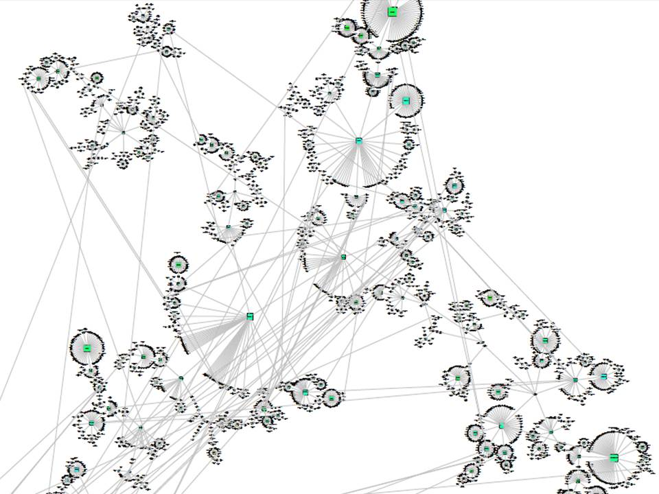

Philosophy Family Tree (Josh Dever)
The Philosophome (presentation by Barry Smith)
The Fifth Cycle of Philosophy (Barry Smith)
Pictures of Philosophy (Andrew Higgins)
Graphing the History of Philosophy (Simon Raper)
History of Philosophy (Merrill Cook)
Philosophers with Erdős Numbers (Toby Handfield)
Philosophical Collaboration Communities (Toby Handfield)
A Co-Citation Network for Philosophy (Kieran Healy)
PhilOnto (Philosophy Ontology)
publication (Pierre Grenon and Barry Smith)
Visual and Philosophical Pedagogy (Robert Farrow)
Philosophy Visualizations (Robert Farrow)
Diagrams (Kevin Sharp)
Charts of Philosophy and Philosophers (Craig Vincent Mitchell)
InPhO: The Indiana Philosophy Ontology Project